Sootling redraw with bubble gum bubbles (drafts, three bubble designs)
View at 100 percent browser zoom. Drafts only, nothing here is game data. The Sootling body is the same in all three designs; only the bubbles differ. Left flier in each animation is the player palette, right is the computer palette (same tiles). Backdrops are the accepted backgrounds-final renders with placeholder islands.
Side by side: flap with two bubbles, flap with one, pop, last pop, respawn
A: Twin bubbles on gum strands
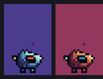

Two separate bubbles side by side above the head, each on a chewed gum strand that runs to the lips. Closest to the old balloon silhouette. One pops: the other swings to the middle.
Weak points:
- Each bubble is only 8 px wide, so the membrane has room for three shades and one gloss tick; the mesh window is 2 to 3 pixels.
- The strands are 1 px lines: over bright windows and over the dusk sun they nearly vanish.
- The two bubbles fill the whole 16 px box; any sideways wobble over 0.5 px is clipped by the box edge.
B: Double-lobed bubble from the mouth
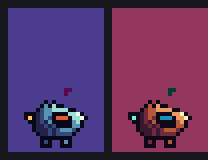

One membrane with two lobes and a crease, blown straight from the lips on a short neck. One lobe pops: the rest pulls round into a single bubble.
Weak points:
- The crease between the lobes is 2 to 3 dithered pixels; at 1x on a CRT it can read as one wide oval instead of two lobes.
- One lobe popping while the other survives is not how a real double bubble behaves; it is a rule read-out, not physics.
- The membrane touches the head tufts, so the Sootling silhouette and the bubble merge more than in A.
C: Stacked bubble (big one with a small one on top)
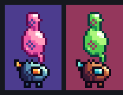
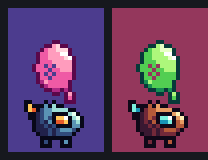
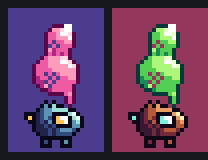
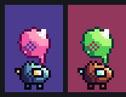
A big bubble from the lips with a second, smaller bubble budded on top. The top one pops first. Tallest shape; count reads by height, not by width.
Weak points:
- Bubble count reads by height (snowman against ball), which is weaker than the side-by-side count when fliers overlap.
- The big bubble is the same size with one or two bubbles; only the small top one changes.
- Uses rows 1..19: the tallest shape, it hides the most backdrop and reaches the top of the box when it stretches.
The fall animation and the Sootling body are identical in all three designs. The current sheet has no walk or stand state, so none was drawn; standing on an island uses the glide frame.
In motion over the moon backdrop (3x)
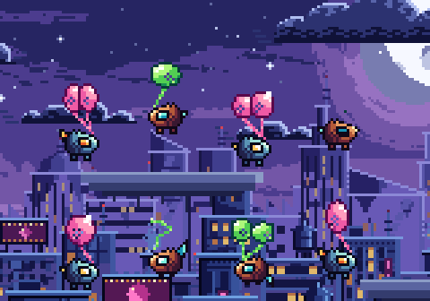
A. Top row: flap with two, flap with one, pop, respawn. Bottom row: last pop, fall, flap with two, flap with one.
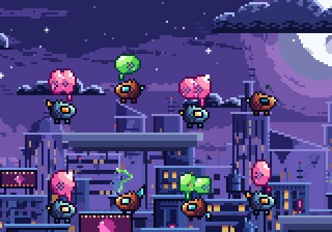
B. Top row: flap with two, flap with one, pop, respawn. Bottom row: last pop, fall, flap with two, flap with one.
C. Top row: flap with two, flap with one, pop, respawn. Bottom row: last pop, fall, flap with two, flap with one.
Scene, Clear night (3x)
A: Twin bubbles on gum strands
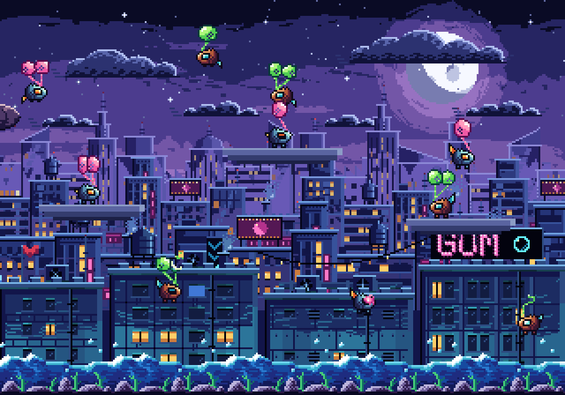
B: Double-lobed bubble from the mouth
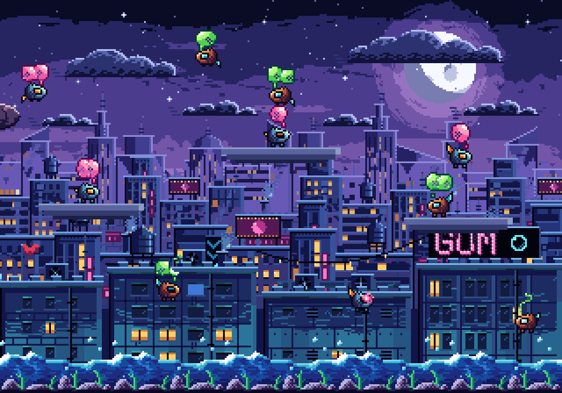
C: Stacked bubble (big one with a small one on top)
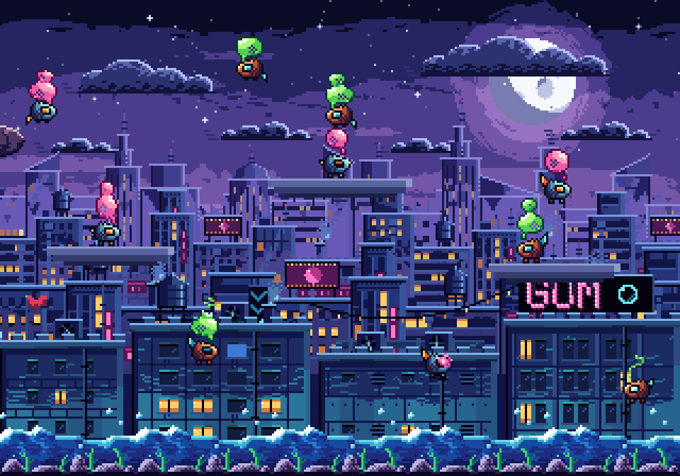
Scene, Storm (3x)
A: Twin bubbles on gum strands
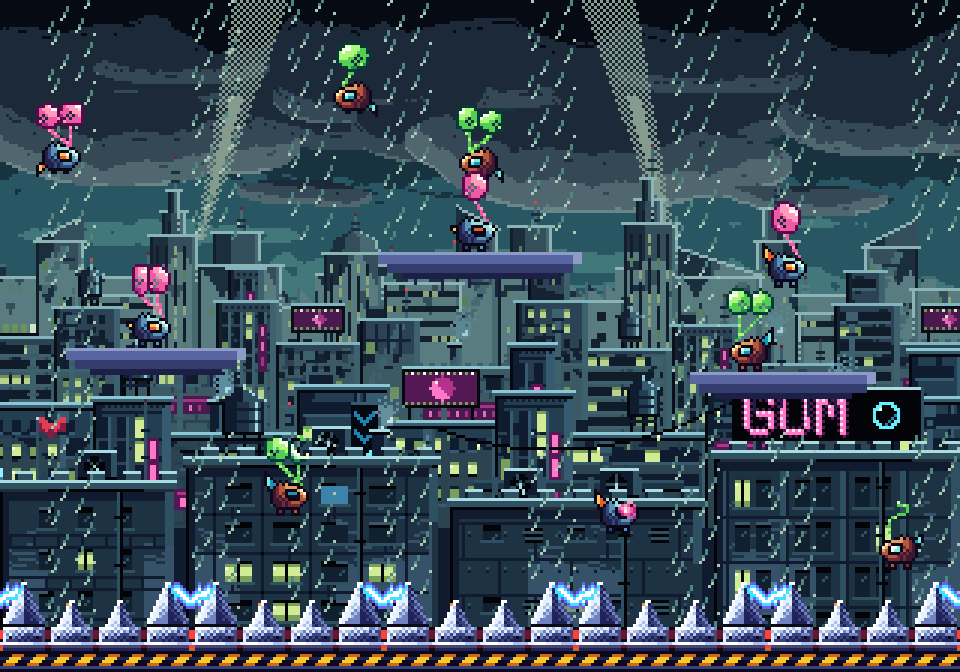
B: Double-lobed bubble from the mouth
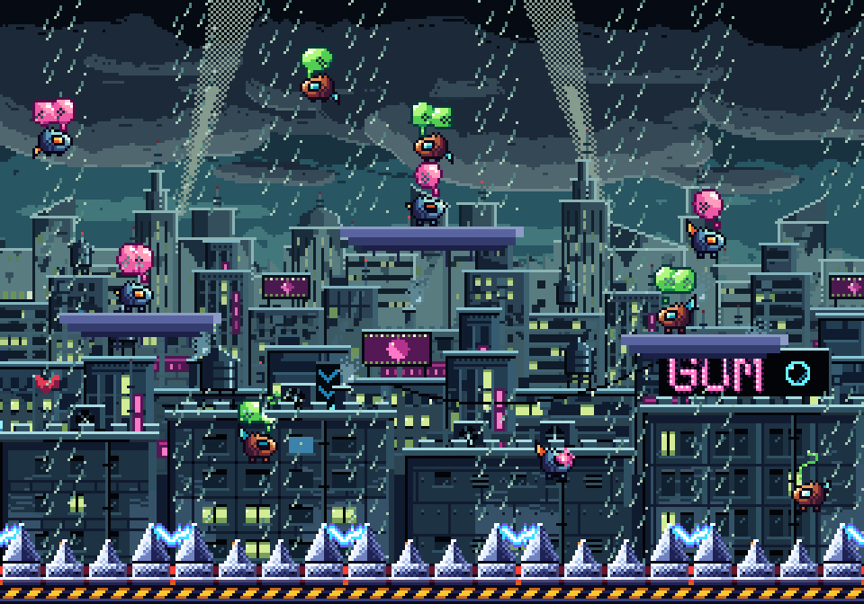
C: Stacked bubble (big one with a small one on top)
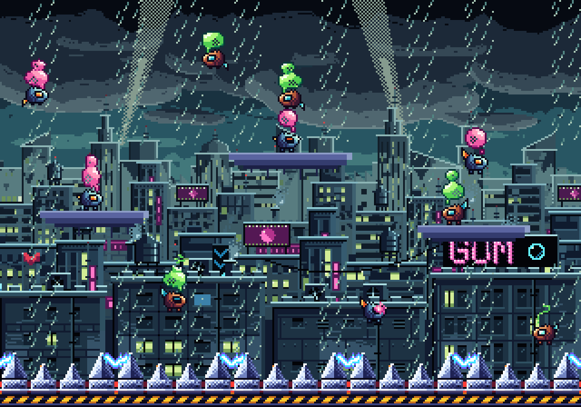
Scene, Ember dusk (3x)
A: Twin bubbles on gum strands
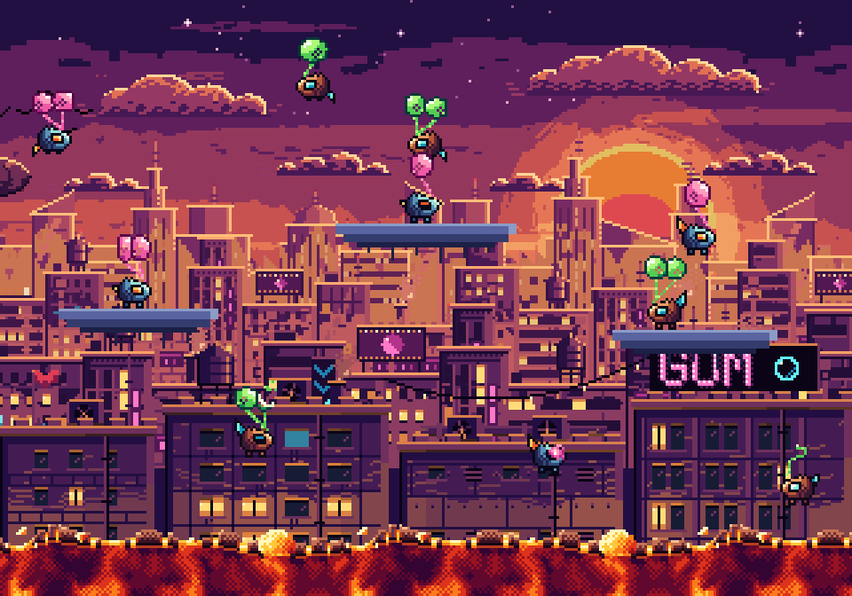
B: Double-lobed bubble from the mouth
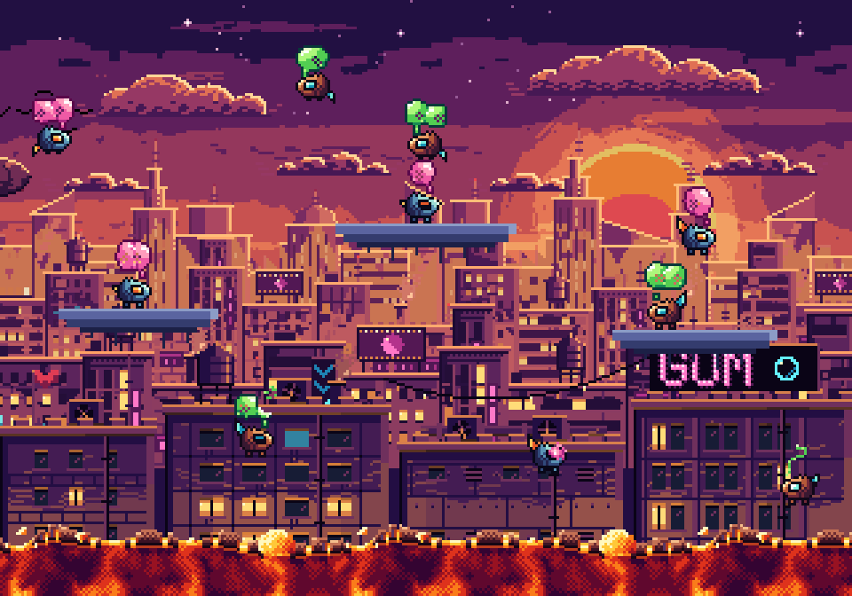
C: Stacked bubble (big one with a small one on top)
Sheets
Build layout (7 frames: glide with two, flap up, flap down, glide with one, flap up with one, no bubble, fall; top row player, bottom row computer) and the extended sheet (rows: flap with two 8, flap with one 8, pop 12, last pop 12, respawn 16, fall 6; player block then computer block).
A
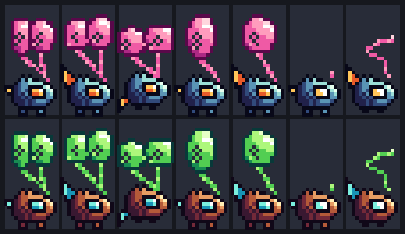
Build layout, 4x
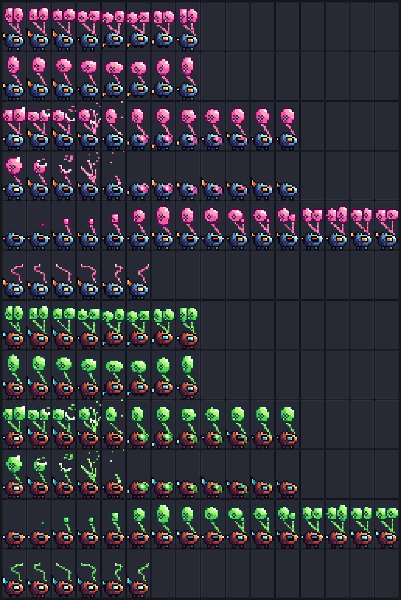
Extended sheet, 4x
B
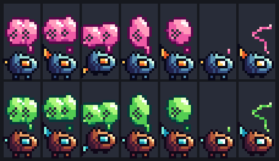
Build layout, 4x
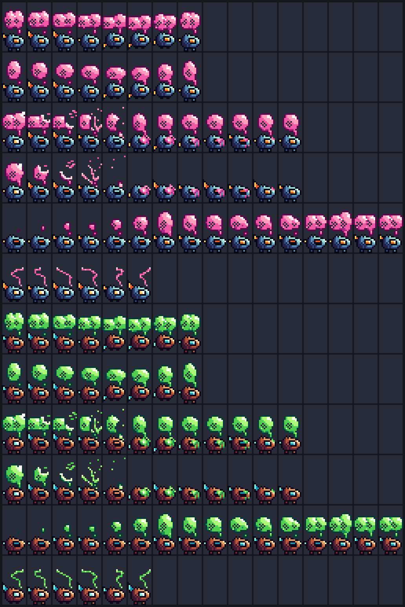
Extended sheet, 4x
C
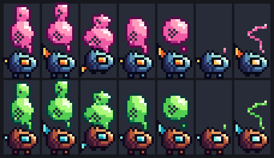
Build layout, 4x
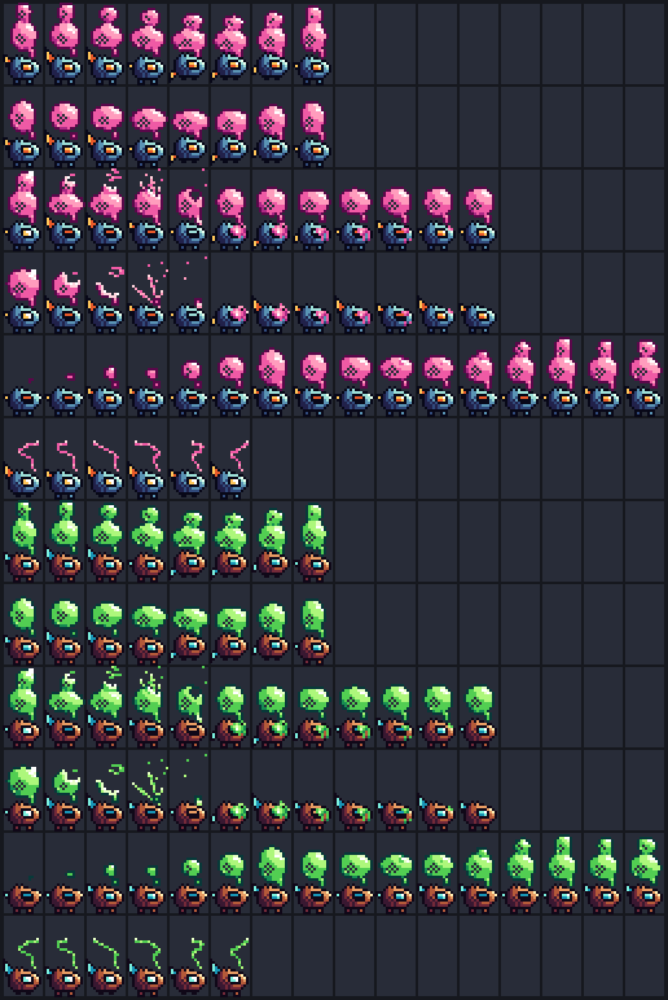
Extended sheet, 4x
Numbers
Sootling with gum bubbles: numbers (script output)
frame box 16 x 32, feet row 31, hit box columns 6..9; one palette of 15 colours + transparent per flier
palette player: o=080818(10) 1=21214a(38) 2=314a7b(72) 3=5a94b5(134) 4=9cded6(201) r=e7ffef(246) e=7b1842(58) f=e75a29(127) g=ffc65a(203) A=5a084a(40) B=ad2984(91) C=ef5aa5(143) D=ff9cbd(189) E=ffd6de(227) w=ffffff(255)
palette cpu : o=100818(12) 1=391831(37) 2=732939(65) 3=b55a39(113) 4=e79c63(172) r=ffefb5(237) e=103963(50) f=1894b5(115) g=7befde(202) A=083939(42) B=188c52(99) C=52ce52(155) D=adf77b(211) E=e7ffc6(241) w=ffffff(255)
dither pair steps player: 1/2 34.4 2/3 62.3 B/C 52.3 minimum 34.4
dither pair steps cpu : 1/2 28.2 2/3 48.5 B/C 56.1 minimum 28.2
backdrop luminance, play area lines 16..175 (p5 / median / p95): moon 21 / 72 / 152 storm 25 / 67 / 168 dusk 26 / 87 / 176
hazard strip median luminance (lines 192..223): moon 68 storm 70 dusk 59
contrast player soot outline (lum 10) against median backdrop: moon 62 storm 58 dusk 77 against hazard: moon 58 storm 61 dusk 50
contrast player gum outline (lum 40) against median backdrop: moon 32 storm 28 dusk 47 against hazard: moon 28 storm 31 dusk 20
contrast player lit fur (lum 201) against median backdrop: moon 129 storm 134 dusk 114 against hazard: moon 133 storm 131 dusk 141
contrast player gum light (lum 189) against median backdrop: moon 117 storm 122 dusk 102 against hazard: moon 121 storm 119 dusk 129
contrast cpu soot outline (lum 12) against median backdrop: moon 60 storm 56 dusk 75 against hazard: moon 56 storm 58 dusk 48
contrast cpu gum outline (lum 42) against median backdrop: moon 30 storm 25 dusk 45 against hazard: moon 26 storm 28 dusk 18
contrast cpu lit fur (lum 172) against median backdrop: moon 100 storm 104 dusk 85 against hazard: moon 104 storm 101 dusk 112
contrast cpu gum light (lum 211) against median backdrop: moon 139 storm 143 dusk 124 against hazard: moon 142 storm 140 dusk 151
== variant A: Twin bubbles on gum strands
frames: legacy sheet 7; extended flap2 8, flap1 8, pop2 12, pop1 12, inflate 16, fall 6 = 62
colours used 14 of 15 (unused: e)
16 x 16 tiles: legacy sheet 13 non-empty, 13 unique; extended set 117 non-empty, 115 unique (both palettes share them)
checker dither pixels over the extended set: 162; pairs 1/2 126, 4/o 12, A/C 8, A/D 1, f/o 15
== variant B: Double-lobed bubble from the mouth
frames: legacy sheet 7; extended flap2 8, flap1 8, pop2 12, pop1 12, inflate 16, fall 6 = 62
colours used 14 of 15 (unused: e)
16 x 16 tiles: legacy sheet 13 non-empty, 13 unique; extended set 117 non-empty, 115 unique (both palettes share them)
checker dither pixels over the extended set: 158; pairs 1/2 126, 4/o 12, A/C 4, C/D 1, f/o 15
== variant C: Stacked bubble (big one with a small one on top)
frames: legacy sheet 7; extended flap2 8, flap1 8, pop2 12, pop1 12, inflate 16, fall 6 = 62
colours used 14 of 15 (unused: e)
16 x 16 tiles: legacy sheet 13 non-empty, 13 unique; extended set 117 non-empty, 116 unique (both palettes share them)
checker dither pixels over the extended set: 163; pairs 1/2 126, 4/o 12, A/C 9, A/D 1, f/o 15